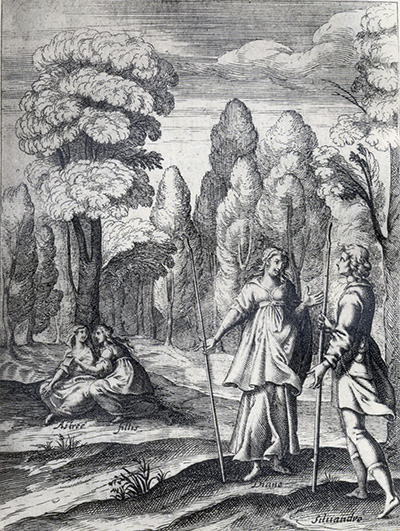
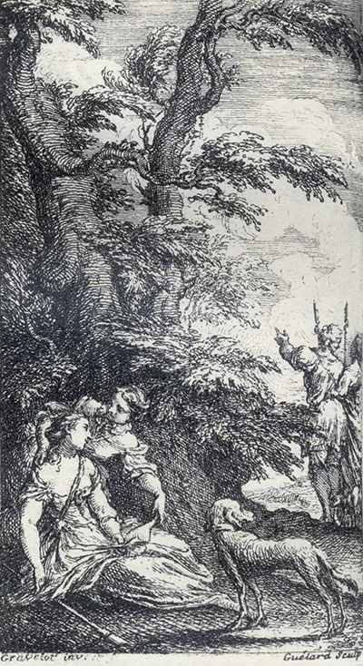
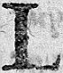
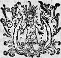

L'Astrée
d'Honoré d'Urfé
Deuxième partie
Livre 3

Astrée et Phillis lisent la lettre tombée de la poche de Silvandre
pendant que le berger parle avec Diane (II, 3, 144)
L'AstréeII, 3. Édition Vaganay**, 1925Astrée et Phillis lisent la lettre tombée de la poche de Silvandre
pendant que le berger parle avec Diane (II, 3, 144)
(Voir Illustrations)

Gravure signée Gravelot et Guélard
Astrée et Phillis lisent la lettre devant Mélampe, pendant que Silvandre
indique un lieu à Diane (II, 3, 148)
L'AstréeII, 3. Édition Vaganay**, 1925Gravure signée Gravelot et Guélard
Astrée et Phillis lisent la lettre devant Mélampe, pendant que Silvandre
indique un lieu à Diane (II, 3, 148)
(Voir Illustrations)
Édition de 1610, p. 123.
Édition de Vaganay, p. 83.
y apprendrons-nous davantage. Et lors, la déployant, elles virent qu'elle était telle :

Mon extrême affection ne consentira jamais que je
donne le nom de peine et de supplice à ce que votre
commandement m'a fait ressentir, ni ne souffrira jamais que la plainte sorte de cette bouche qui n'a
été destinée que pour votre louange. Mais elle me
permettra bien de dire que l'état où je suis, qu'un
autre trouverait peut être insupportable, me
contente, d'autant que je sais que vous le voulez et
l'ordonnez ainsi. Ne faites donc point de difficulté
d'étendre plus outre encore, s'il se peut, vos
commandements, et je continuerai en mon obéissance,
afin que si, durant ma vie, je n'ai pu vous assurer
de ma fidélité, les Champs-Élysées pour le moins, et
les âmes bienheureuses qui y sont, reconnaissent que
je suis le plus fidèle comme le plus infortuné de
vos serviteurs.
qui fait que toute partie recherche de se rejoindre à son tout ; de même son cœur, atteint des beautés de sa Maîtresse, tournait incessamment toutes ses pensées vers elle. Et pour mieux faire entendre cette conception, il y ajouta ces vers :
L'aiguille du cadran cherche la Tramontane, Touchée avec l'Aimant :
Mon cœur aussi, touché des beautés de Diane,
La cherche incessamment.
vers ceux qui venaient après eux, leur firent signe d'aller doucement. Mais d'autant que la chanson était presque finie, ils n'ouïrent que ce dernier couplet :
CHANSON
Phillis d'un éclat rougissant
Oyant ces mots devint plus belle ;
- En vain cette beauté nouvelle
Rend, dit-il, votre œil plus puissant.
III.
- Mais s'il plaint, dit-elle, à l'instant
Sa liberté, qu'il la reprenne.
- Vous êtes, dit-il, moins humaine
En pardonnant qu'en surmontant.
SONNET.
IL PARLE AU VENT.

Elle fuit, et fuyant η elle veut qu'on l'atteigne,
Refuse, et refusant veut qu'on l'ait par effort,
Combat, et combattant veut qu'on soit le plus fort,
Car ainsi son honneur ordonne qu'elle feigne.


Livre 2

Livre 4
Référence électronique :
document.write('"'+document.title.substr(0, document.title.indexOf("-")-1)+'". '+"Dernière mise à jour : "+ExtractDate(document.lastModified)+".")Deux visages de L'Astrée.
©2005-2020 E. Henein.
URL :
var today = new Date();
document.write(document.URL +
"<br>Consulté le : " + today.toLocaleDateString("fr-FR") + ".");
var _gaq = _gaq || [];
_gaq.push(['_setAccount', 'UA-19288475-1']);
_gaq.push(['_trackPageview']);
(function() {
var ga = document.createElement('script'); ga.type = 'text/javascript'; ga.async = true;
ga.src = ('https:' == document.location.protocol ? 'https://ssl' : 'http://www') + '.google-analytics.com/ga.js';
var s = document.getElementsByTagName('script')[0]; s.parentNode.insertBefore(ga, s);
})();
Deux visages de L'Astrée.
©2005-2019 Eglal Henein. Creative Commons 4 
Édition critique de la première partie de L'Astrée (1607, 1621)
mise en ligne le 9 avril 2007
Édition critique de la deuxième partie de L'Astrée (1610, 1621)
mise en ligne le 10 octobre 2010
Édition critique de la troisième partie de L'Astrée (1619, 1621)
mise en ligne le 1er novembre 2014
Édition critique de la quatrième partie de L'Astrée (1624)
mise en ligne le 15 janvier 2019
document.write("Dernière mise à jour : "+ExtractDate(document.lastModified))